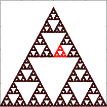
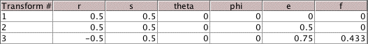
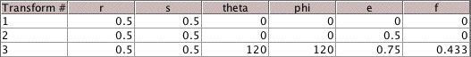

|  |  | |
| Standard 321 | (a) |
| ||||||
| Comparing the address 3 traingles, we see (a) has been reflected across a vertical line. | ||||||
| Within the formalism of the IFS rules, this is achieved by | ||||||
|  | ||||||
| Note how the e translation of T3 must be changed to place the upper triangle in the right position. |
| ||||||
| Comparing the address 3 traingles, we see (b) has been rotated 120 degrees counterclockwise. | ||||||
| Within the formalism of the IFS rules, this is achieved by | ||||||
|  | ||||||
| Note how the e translation of T3 must be changed to place the upper triangle in the right position. |
Return to Exercise 4.